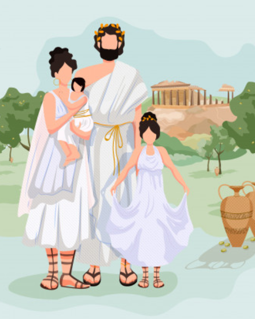

- Sus raíces provienen de los egipcios.
- Se alimentaban principalmente de frutas, semillas, granos, verduras, mariscos y pescados.
- Eran politeísta, es decir, creían en varios dioses.
- Se han caracterizado por monumentos y pinturas de estilo religioso.
- Realizaron grandes avances médicos para la época.
- Desarrollaron el pensamiento filosófico basado en la razón y el saber.
- Actualmente se ubican en la parte oriental del mar Mediterráneo y se expanden hasta la península balcánica, las islas del mar Jónico y Egeo y las costas occidentales de Asia Menor, tales como Turquía.
La cultura griega era politeísta, es decir, creía y adoraba a diferentes dioses. Representaban a sus deidades con forma humana ya que creían que así conservaban la juventud y eran inmortales. Estas deidades vivían en el monte Olimpo y se relacionaban con el bienestar y las actividades de los mortales.
La religión griega fomentaba el respeto, el perdón, el valor de la familia, la distinción entre lo sagrado y lo profano y la memoria de los ancestros. El dios más poderoso para la cultura griega era Zeus, padre de todos los dioses.
En un principio, los griegos no implementaban el uso de ropa interior.
Las mujeres utilizaban una faja que sujetaba el pecho y, por encima de ella, una túnica de lana, lino o pieles llamadas peplo, himatión e hitón, parecidas a un camisón largo de dormir.
Los hombres utilizaban una vestimenta muy parecida a la de las mujeres, pero con mangas cortas con hebillas o broches ubicados en los hombros. Para ceñir su túnica usaban un cinturón.
El principal pilar económico de los griegos provenía de la agricultura de viñas, olivos y cereales. También utilizaron la artesanía con cerámica y metales y, posteriormente, la ganadería y el comercio marítimo.
Si bien su economía tuvo serios altibajos, los griegos lograron mantenerse estables tanto exportando e importando artículos como vendiendo los productos en su misma tierra
Arte, Arquitectura y Turismo
Templo Atenea
es otro de los edificios pertenecientes a la Acrópolis de Atenas del siglo V a.C. Los planos sobre los que fue ejecutada la obra fueron proyectados por Calícrates, quien también participó como arquitecto, junto a Ictinio, de la construcción del Partenón.
Leer mas...Cofú
Otro de los principales lugares que visitar en Grecia es la segunda mayor isla de las Jónicas, Corfú.
Batallas y conquistas perfilaron la historia de una isla que posee también grandes bellezas naturales
Leer mas...Santorini
Hay muchas islas que visitar en Grecia, las más conocidas de todas son las que forman el archipiélago de Santorini.
Santorini está considerado como uno de los lugares más románticos del mundo, no te pierdas sus legendarias puestas de sol.
Leer mas..Templo de Poseidon
Demás está decir que en toda Grecia hay más de un templo consagrado al poderoso dios del mar. Sin embargo, el templo ubicado en el cabo Sounion es sin dudas uno de los más impresionantes que pueden encontrarse. Construido en lo alto de un acantilado que se interna en el mar Egeo
Leer mas...